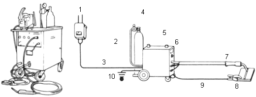
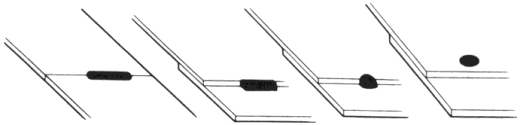

CAUTION
CAUTION
Disconnect the negative battery cable before arc welding.
Welding Methods
|
2-19 |
This welding process uses inexpensive carbon dioxide instead of expensive inert gases as a shielding means. Consumable metal electrodes are employed. It has a wide range of applications, including butt welding of a thin plate, fillet welding, plug welding and MIG spot welding. In terms of the weld strength, it is also highly stable.
Welders:
 |
|
|
Disconnect the negative battery cable before arc welding. |
Welding Methods:
| Butt welding | Fillet welding | Spot welding | Plug welding |

Plug Welding Conditions:
Plate thickness and weld holes
| Unit: mm (in.) | |||
| Plate thickness | ~1.0 (0.04) | 1.0 (0.04) ~ 1.5 (0.06) | 1.5 (0.06)~ |
| Weld hole diameter | 5 (0.2) | 6.5 (0.26) | 8 (0.3) |